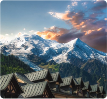
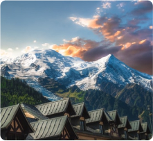

Talking
TravelTalking
TravelPOPULAR DESTINATIONS
Hello Switzerland!Darrell Steward
Author / PhotographerOur Swiss adventure story
Location location location! Zermatt Switzerland offers majestic landscapes that cannot be seen elsewhere. The Matterhorn for
 

As one of the alpine countries, landlocked Switzerland with her mountains has to compete not only with her neighbours but with other destinations. There are, e.g., no coastal resorts.
The advantage is that tourism in Switzerland benefits of a large diversity of beautiful landscapes in a relatively small space.
Hightlight
Disclaimer
The COVID-19 pandemic has dealt a severe blow to the tourism business in Switzerland. Although it is a minor position